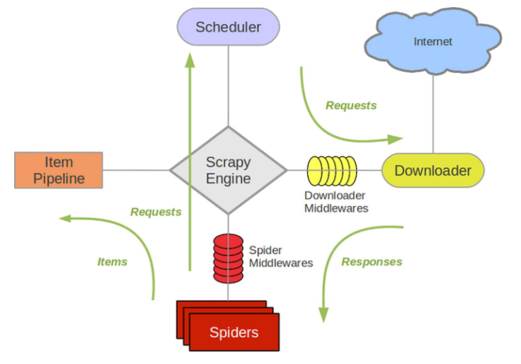
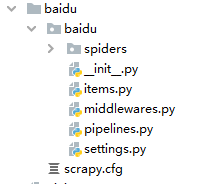

python爬虫大总结
网络爬虫（又称为网页蜘蛛，网络机器人，在FOAF社区中间，更经常的称为网页追逐者，是一种按照一定的规则，自动地抓取万维网信息的程序或者脚本。另外一些不常使用的名字还有蚂蚁、自动索引、模拟程序或者蠕虫。
Requests和Beautifulsoup4
requests：其库中的 get() 方法能向服务器发送了一个请求，请求类型为 HTTP 协议的 GET 方式；post() 方法，也能向服务器发送一个请求，请求类型是 HTTP 协议的 POST 方式，可根据访问的网页而定。
beautifulsoup4：Beautiful Soup是一个可以从HTML或XML文件中提取数据的Python库.它能够通过你喜欢的转换器实现惯用的文档导航,查找,修改文档的方式.Beautiful Soup会帮你节省数小时甚至数天的工作时间.
安装
pip install requests (python3自带)
pip install beautifulsoup4导入包
import requests; # requests
from bs4 import BeautifulSoup; # beautifulsoup4request的各种请求方式
requests.post('http://httpbin.org/post')
requests.put('http://httpbin.org/put')
requests.delete('http://httpbin.org/delete')
requests.head('http://httpbin.org/get')
requests.options('http://httpbin.org/get')请求的含义如下：
GET： 请求指定的页面信息，并返回实体主体。
HEAD： 只请求页面的首部。
POST： 请求服务器接受所指定的文档作为对所标识的URI的新的从属实体。
PUT： 从客户端向服务器传送的数据取代指定的文档的内容。
DELETE： 请求服务器删除指定的页面。
get 和 post比较常见 GET请求将提交的数据放置在HTTP请求协议头中；POST提交的数据则放在实体数据中
流程
初始化变量
def __init__(self):
self.target = "https://www.xxxx.cn";
self.name = [];# 卡片名称
self.level = [];# 星阶
self.ATK = [];# 攻击力
self.DEF = [];# 防御力
self.race = [];# 种族
self.attribute = [];# 属性
self.type = [];# 类型
self.desc = [];# 效果
self.imgurl = [];# 图片URL获取html
## 获取HTML
def getHTML(self,page):
html = requests.get(self.target+page);
html.encoding="utf-8";
return html;这里转换html的编码，防止出现乱码错误
beautifulsoup4解析html数据
流程如下：
- 调用beautifulsoup解析requests获取的html数据。
htmlbody = BeautifulSoup(html.text,features="html.parser");,features=”html.parser”是告诉beautifulsoup解析的是html数据，不然整个控制台全是一些警告信息 - 利用findall找出html标签。两种方式，第一种是直接搜索盒子
cardList = htmlbody.find_all("script");,第二种是通过盒子的class查找`div_bf.find_all(‘div’, class = ‘listmain’)`。注意它们返回的值为数组 - 找到合适的，写入数据，可以利用json.loads将json字符串转化成json，处理更加轻松。
## 获取怪兽卡片
def getMonster(self,page):
html = self.getHTML(page);
htmlbody = BeautifulSoup(html.text);
cardList = htmlbody.find_all("script");
cardScript = cardList[2].string;
bracesIndex = cardScript.index("[");
## 处理json string，变成python对象(看着像二维数组)
cardJSON = json.loads(cardScript[bracesIndex:].split(",\"meta")[0]);
i = 0;
while(i < 10):
## 获取卡片属性
name = cardJSON[i]["name"];
level = cardJSON[i]["level"];
atk = cardJSON[i]["atk"];
def_ = cardJSON[i]["def"];
race = cardJSON[i]["race"];
attribute = cardJSON[i]["attribute"];
type = cardJSON[i]["type_st"];
desc = cardJSON[i]["desc"];
imgurl = cardJSON[i]["img_url"];
## 存储
self.name.append(name)
self.level.append(level)
self.ATK.append(atk)
self.DEF.append(def_)
self.race.append(race)
self.attribute.append(attribute)
self.type.append(type)
self.desc.append(desc)
self.imgurl.append(imgurl)
i = i+1;数据保存
爬虫后的数据可通过数据库保存，可以保存到表格或者word文档中
Demo
import requests,time,json,sys;
import xlwings;# excel操作
from bs4 import BeautifulSoup;
## 爬取YGO网页的所有怪兽卡
class CollectYGOcard:
def __init__(self):
self.target = "https://www.xxxx.cn/";
# self.target = "https://www.xxxx.cn/";
self.name = [];# 卡片名称
self.level = [];# 星阶
self.ATK = [];# 攻击力
self.DEF = [];# 防御力
self.race = [];# 种族
self.attribute = [];# 属性
self.type = [];# 类型
self.desc = [];# 效果
self.imgurl = [];# 图片URL
## 清除list
def clearList(self):
self.name.clear;# 卡片名称
self.level.clear;# 星阶
self.ATK.clear;# 攻击力
self.DEF.clear;# 防御力
self.race.clear;# 种族
self.attribute.clear;# 属性
self.type.clear;# 类型
self.desc.clear;# 效果
self.imgurl.clear;# 图片URL
## 获取HTML
def getHTML(self,page):
html = requests.get(self.target+page);
html.encoding="utf-8";
return html;
## 获取怪兽卡片
def getMonster(self,page):
html = self.getHTML(page);
htmlbody = BeautifulSoup(html.text);
cardList = htmlbody.find_all("script");
cardScript = cardList[2].string;
bracesIndex = cardScript.index("[");
## 处理json string，变成python对象(看着像二维数组)
cardJSON = json.loads(cardScript[bracesIndex:].split(",\"meta")[0]);
i = 0;
while(i < 10):
## 获取卡片属性
name = cardJSON[i]["name"];
level = cardJSON[i]["level"];
atk = cardJSON[i]["atk"];
def_ = cardJSON[i]["def"];
race = cardJSON[i]["race"];
attribute = cardJSON[i]["attribute"];
type = cardJSON[i]["type_st"];
desc = cardJSON[i]["desc"];
imgurl = cardJSON[i]["img_url"];
## 存储
self.name.append(name)
self.level.append(level)
self.ATK.append(atk)
self.DEF.append(def_)
self.race.append(race)
self.attribute.append(attribute)
self.type.append(type)
self.desc.append(desc)
self.imgurl.append(imgurl)
i = i+1;
## 将数据保存到表格
def saveTOExcel(self):
wingsAPP = xlwings.App(visible=False,add_book=False);
excel = wingsAPP.books.open("YGO.xlsx");
sheet = excel.sheets["怪兽"];# 初始化sheet
i = 0;
page = 2;# 想要爬多少页就写多少数字
pager = 1;# 从第几页开始爬
row = 0;
while(pager < page+1):
self.getMonster(str(pager))
while(i < 10):
sheet.range('A'+str(row+3)).value = self.name[row]# 保存卡片名字数据
sheet.range('B'+str(row+3)).value = self.level[row]# 保存星阶数据
sheet.range('C'+str(row+3)).value = self.ATK[row]# 保存攻击力数据
sheet.range('D'+str(row+3)).value = self.DEF[row]# 保存防御力数据
sheet.range('E'+str(row+3)).value = self.race[row]# 保存种族数据
sheet.range('F'+str(row+3)).value = self.attribute[row]# 保存属性数据
sheet.range('G'+str(row+3)).value = self.type[row]# 保存类型数据
sheet.range('H'+str(row+3)).value = self.desc[row]# 保存效果数据
sheet.range('I'+str(row+3)).value = self.imgurl[row]# 保存图片URL数据
sys.stdout.write("\n录入了"+ str(row+1) + "张卡片");
sys.stdout.flush();
time.sleep(1)
i = i+1;
row = row+1;
pager = pager+1;
i = 0;# 归0，对程序没有任何影响
excel.save();# 保存表格
excel.close();
wingsAPP.quit();
self.clearList();
## 保存卡牌图片，网站图片错误，有大量图片获取失败
def downloadImg(self):
headers = {'User-Agent':'Mozilla/5.0 (Windows NT 10.0; Win64; x64) AppleWebKit/537.36 (KHTML, like Gecko) Chrome/93.0.4577.63 Safari/537.36'}
i = 0;
number = 1;# 展示，对程序无影响
page = 10;# 想要爬多少页就写多少数字
pager = 1;# 从第几页开始爬
while(pager < page+1):
self.getMonster(str(pager))
while(i < len(self.imgurl)):
imgUrl = requests.get(self.imgurl[i]);# 请求图片的url
name = self.name[i]
with open("monsterImg/"+name+".png","wb") as f:
f.write(imgUrl.content);# 将请求内容写入到文件中
f.flush();
time.sleep(2)
sys.stdout.write("\n保存了"+ str(number) + "张卡片图");
sys.stdout.flush();
i = i+1;
number = number+1;
pager = pager+1;
i = 0;# 归0，对程序没有任何影响
self.imgurl.clear;# 清除list，让循环正常
self.name.clear;# 清除list，让循环正常
if __name__ == "__main__":
YGO = CollectYGOcard();
YGO.saveTOExcel();Scrapy
Scrapy是适用于Python的一个快速、高层次的屏幕抓取和web抓取框架，用于抓取web站点并从页面中提取结构化的数据。Scrapy用途广泛，可以用于数据挖掘、监测和自动化测试。
Scrapy吸引人的地方在于它是一个框架，任何人都可以根据需求方便的修改。它也提供了多种类型爬虫的基类，如BaseSpider、sitemap爬虫等，最新版本又提供了web2.0爬虫的支持。
scrapy基本结构
Scrapy框架主要由五大组件组成，它们分别是调度器(Scheduler)、下载器(Downloader)、爬虫（Spider）和实体管道(Item Pipeline)、Scrapy引擎(Scrapy Engine)。
- 调度器(Scheduler):
- 把它假设成为一个URL（抓取网页的网址或者说是链接）的优先队列，由它来决定下一个要抓取的网址是 什么，同时去除重复的网址（不做无用功）。用户可以自己的需求定制调度器。
- 下载器(Downloader):
- 它是所有组件中负担最大的，它用于高速地下载网络上的资源。Scrapy的下载器代码不会太复杂，但效率高，主要的原因是Scrapy下载器是建立在twisted这个高效的异步模型上的(其实整个框架都在建立在这个模型上的)。
- 爬虫（Spider）:
- 它是用户最关心的部份。用户定制自己的爬虫(通过定制正则表达式等语法)，用于从特定的网页中提取自己需要的信息，即所谓的实体(Item)。 用户也可以从中提取出链接,让Scrapy继续抓取下一个页面。类似于springboot中的controller。
- 实体管道(Item Pipeline):
- 实体管道，用于处理爬虫(spider)提取的实体。主要的功能是持久化实体、验证实体的有效性、清除不需要的信息。类似于java中的orm，是操作数据库的。Item类似于java中的实体对象，Pipeline更像数据库中的业务操作。
- Scrapy引擎(Scrapy Engine):
- Scrapy引擎是整个框架的核心.它用来控制调试器、下载器、爬虫。实际上，引擎相当于计算机的CPU,它控制着整个流程。
整体架构图

xpath
| 符号 | 说明 |
|---|---|
| / | 从根节点选取，使用绝对路径，路径必须完全匹配 |
| // | 从整个文档中选取，使用相对路径 |
| . | 从当前节点开始选取 |
| … | 从当前节点父节点开始选取 |
| @ | 选取属性 |
| text() | 获取文本 |
案例
| 路径表达式 | 结果 |
|---|---|
| body | 选取 body 元素的所有子节点。 |
| /head | 选取根元素下head。假如路径起始于正斜杠( / )，则此路径始终代表到某元素的绝对路径！ |
| div/a | 选取属于 div 的子元素的所有 a 元素。 |
| //a | 选取所有 a 子元素，而不管它们在文档中的位置。 |
| div//a | 选择属于 div 元素的后代的所有 a 元素，而不管它们位于 bookstore 之下的什么位置。 |
| //@class | 选取名为 class 的所有属性。 |
| ./a | 选取当前元素下的a |
| …/a | 选取父元素下的a |
| a/@href | 选取a标签的href属性 |
| a/text() | 选取a标签下的文本 |
安装
pip install scrapy常用命令
创建scrapy项目
scrapy startproject baidu(项目名)目录大致如下：

目录的解释为：
- scrapy.cfg：项目的配置文件
- baidu/：该项目的python模块。之后在这个地方加代码
- baidu/items.py：项目中的item文件
- baidu/pipelines.py：项目中的pipelines文件
- baidu/settings.py：项目中的设置文件
- baidu/spiders/：放置spider代码的目录
生成爬虫
cd baidu/spiders/(项目名/spiders/)
scrapy genspider baidu(爬虫名) www.baidu.com(域名)启动爬虫
cd baidu(scrapy.cfg的项目所在地)
scrapy crawl baidu(爬虫名）制作 Scrapy 爬虫的步骤
- 新建项目 (scrapy startproject xxx)：新建一个新的爬虫项目
- 明确目标 （编写items.py）：明确你想要抓取的目标
- 制作爬虫 （spiders/xxspider.py）：制作爬虫开始爬取网页
- 存储内容 （pipelines.py）：设计管道存储爬取内容
超简单入门小案例
以下案例为介绍最简单的流程
新建项目
scrapy startproject mySpider明确目标，编写items.py
import scrapy
class ItcastItem(scrapy.Item):
name = scrapy.Field()
title = scrapy.Field()
info = scrapy.Field()制作爬虫
首先新建爬虫文件
cd ./mySpider/spiders
scrapy genspider itcast "itcast.cn"打开 mySpider/spider目录里的 itcast.py，修改start_urls属性以及parse()方法
import scrapy
class ItcastSpider(scrapy.Spider):
name = 'itcast'
allowed_domains = ['itcast.cn']
start_urls = ["http://www.itcast.cn/channel/teacher.shtml"]# 要爬的url
def parse(self, response):
# 获取网站标题
context = response.xpath('/html/head/title/text()')
# 提取网站标题
title = context.get()
print(title)运行爬虫
命令行模式：
cd mySpider
scrapy crawl itcast脚本模式：
新建mian.py，加入如下代码
from scrapy import cmdline
cmdline.execute("scrapy crawl itcast".split())运行代码即可
获取资源
四个方法：get() 、getall() 、extract() 、extract_first()
- get() ：获取头一个数据，没有的时候返回None
- getall() ：获取所有的数据，没有的时候返回None
- extract() ：获取所有的数据，没有的时候抛出一个错误
- extract_first()：获取头一个数据，没有的时候抛出一个错误
get() 、getall() 是新版本的方法，extract() 、extract_first()是旧版本的方法。
titleXPATH = response.xpath('//*[@class="card-item"]/h3/a/text()') # 通过text()寻找文字
titles = titleXPATH.getall() # 获取所有的信息，返回一个list
titles = titleXPATH.get() # 获取一个信息，返回一个str
titles = titleXPATH.extract() # 获取所有的信息，返回一个list
titles = titleXPATH.extract_first() # 获取一个信息，返回一个str抓取新连接
有时在旧的连接中有新的连接，这个时候就需要抓取新的连接的内容，关键代码如下：
yield scrapy.Request(url=next_url, dont_filter=True, callback = self.next)参数如下：
- url：下一个要抓的url
- dont_filter：关闭默认过滤掉重复的请求URL的功能
- callback：调用的方法
Demo：
class YgoSpider(scrapy.Spider):
name = 'ygo'
allowed_domains = ['ygo']
start_urls = ['http://www.ourocg.cn/card/list-1/1']
def parse(self, response):
self.next(response) # 第一次抓取的直接调用
i = 2
while(i < 10):
next_url = "http://www.ourocg.cn/card/list-1/"+str(i) # 获取每一页的url
yield scrapy.Request(url=next_url, dont_filter=True, callback = self.next) # 继续爬
i += 1
def next(self, response):
titleXPATH = response.xpath('//*[@class="card-item"]/h3/a/text()') # 通过text()寻找文字
titles = titleXPATH.getall() # 获取所有的信息，返回一个list
print(titles)Selenium
该框架并不是用于爬虫的，但是可以通过Selenium获取网站数据，初始化参数如下：
## Chrome后台静默运行
__options = webdriver.ChromeOptions()
__options.add_argument('--no-sandbox') # 解决DevToolsActivePort文件不存在的报错
__options.add_argument('--start-maximized') # 最大化运行（全屏窗口）,不设置，取元素会报错
__options.add_argument('--disable-infobars') # 禁用浏览器正在被自动化程序控制的提示
__options.add_argument('window-size=1920x1080') # 设置浏览器分辨率
__options.add_argument('--disable-gpu') # 谷歌文档提到需要加上这个属性来规避bug
__options.add_argument('--hide-scrollbars') # 隐藏滚动条，应对一些特殊页面
__options.add_argument('blink-settings=imagesEnabled=false') # 不加载图片，提升运行速度
__options.add_argument('--headless') # 浏览器不提供可视化界面。Linux下如果系统不支持可视化不加这条会启动失败
__options.add_argument("--ignore-certificate-errors")
# 传入user-agent，欺骗网站，使得它认为是在实际的浏览器上运行,这样的话运行的网络速度是和UI运行的时候是一样的
__options.add_argument('user-agent="Mozilla/5.0 (Windows NT 10.0; Win64; x64) AppleWebKit/537.36 (KHTML, like Gecko) Chrome/93.0.4577.63 Safari/537.36"')
__options.add_argument("--ignore-ssl-errors")
__wukongDriver = webdriver.Chrome(executable_path = "./browserDriver/chromedriver.exe",options=__options)# Chrome 浏览器驱动存放路径然后获取网站数据即可，详细Selenium讲解：自动化测试框架大总结
本博客所有文章除特别声明外，均采用 CC BY-SA 4.0 协议 ，转载请注明出处！